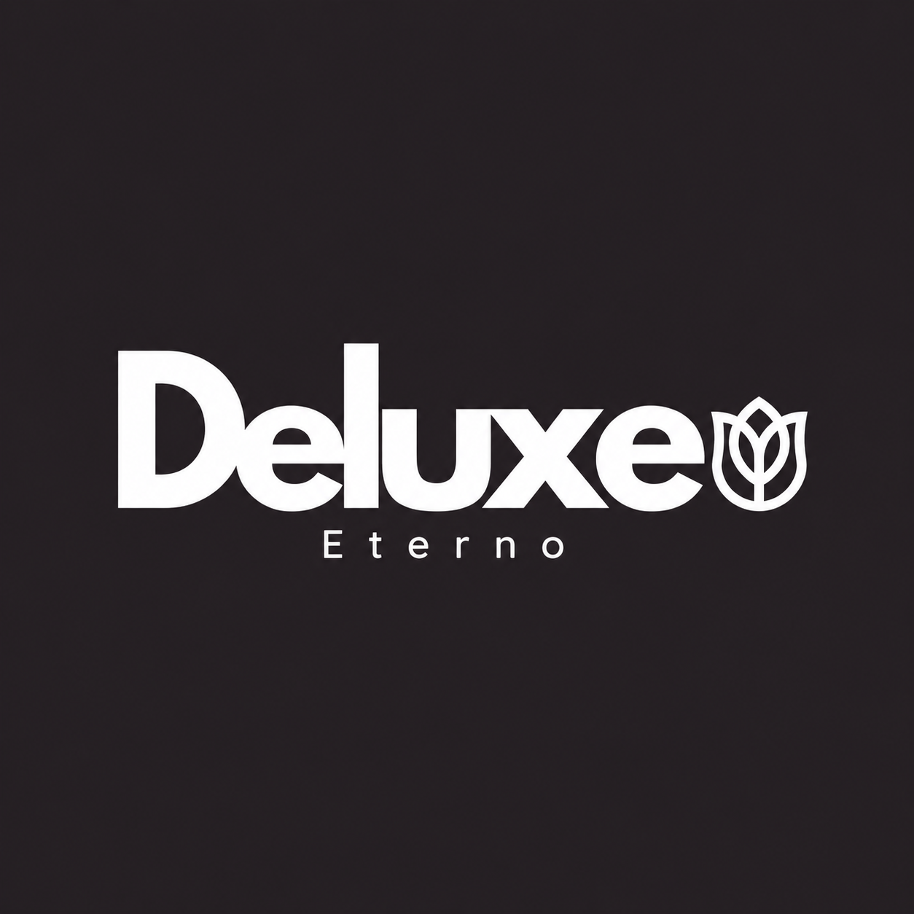

Recursos gráficos · versión 1Deluxe Eterno
Variantes raster derivadas del logo original para preparar la nueva identidad de la aplicación. Mantener proporciones y espacio libre; evitar sombras, deformaciones y recoloraciones arbitrarias.

Monocromático oscuroDocumentación y composiciones de un solo color.
Descargar PNG
Símbolo floralIdentificador compacto. Comprobar legibilidad antes de exportar favicons pequeños.
Descargar PNG
Dirección cromática
Valores de trabajo aproximados a la imagen entregada; no constituyen especificaciones oficiales de la marca.
Coral · #EF6669Rosa claro · #FFF0F7Tinta · #252125
Conservar el original como referencia. Estas reconstrucciones generadas pueden presentar pequeñas diferencias frente al archivo maestro; no sustituyen un original vectorial.